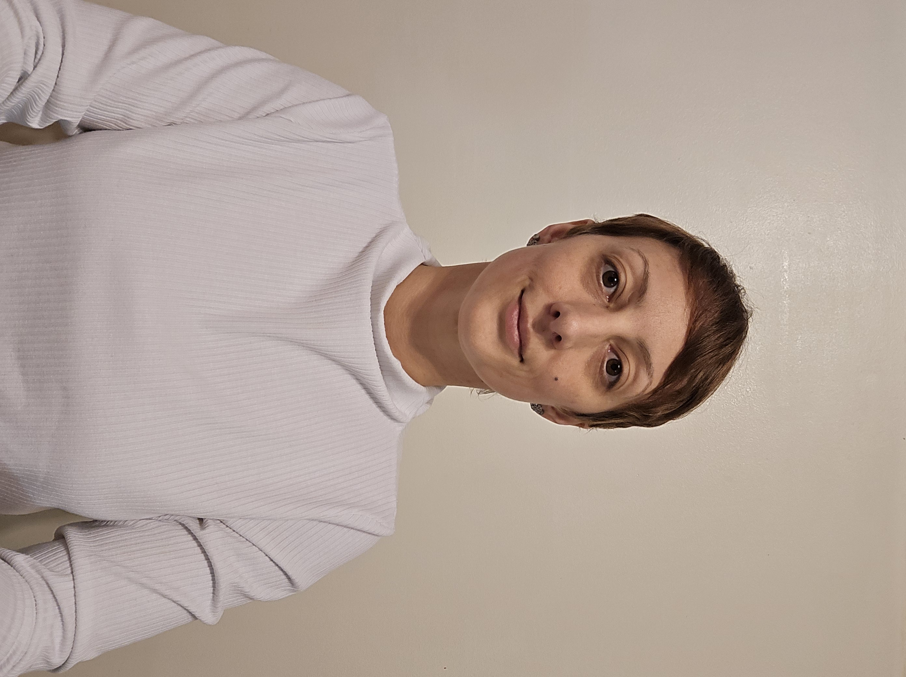

I first enrolled in Bristol during the fall 2023 semester. Due to a work accident, I was in need of a new career when the state funding program MassReconnect came out. I decided to enter the office administration associate program, with a concentration in executive office administrator. I graduated from that program in the spring 2025 semester. I then reenrolled in Bristol this semester, fall 2025, to pursue my associate degree in applied artificial intelligence.
My goal after Bristol is to combine my associate degrees in office administration and applied artificial intelligence with my critical thinking and organizational skills and pursue a career in data analysis.